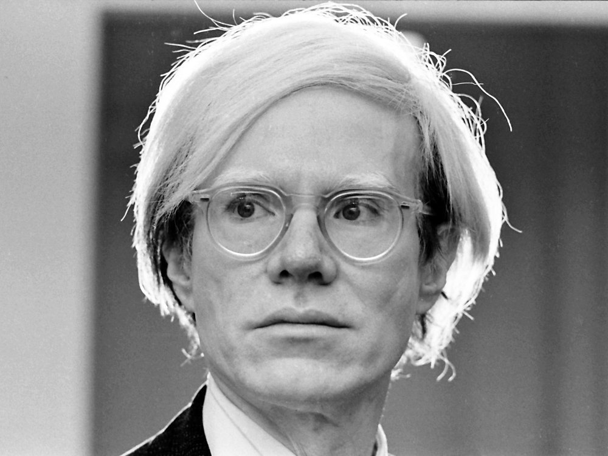
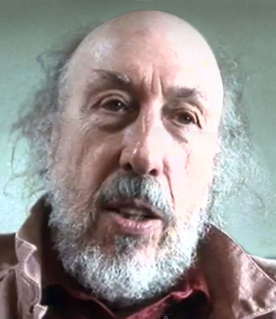
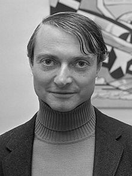
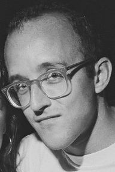
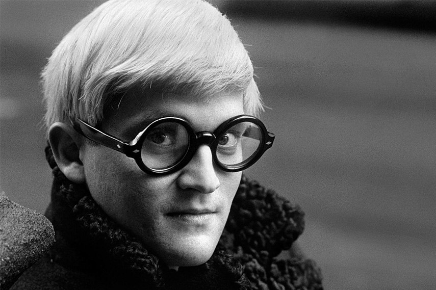
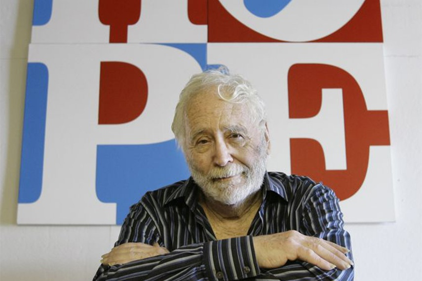

Andy Warhol
Born Andrew Warhola Jr.; August 6, 1928 – February 22, 1987) was an American artist, film director, and producer who was a leading figure in the visual art movement known as pop art. His works explore the relationship between artistic expression, advertising, and celebrity culture that flourished by the 1960s, and span a variety of media, including painting, silkscreening, photography, film, and sculpture. Some of his best-known works include the silkscreen paintings Campbell's Soup Cans (1962) and Marilyn Diptych (1962), the experimental films Empire (1964) and Chelsea Girls (1966), and the multimedia events known as the Exploding Plastic Inevitable (1966–67).

Richard William Hamilton
Widely accepted as the founder of Pop Art. Born in 24 February 1922, he was an English painter and collage artist. His 1955 exhibition Man, Machine and Motion (Hatton Gallery, Newcastle upon Tyne) and his 1956 collage 'Just what is it that makes today's homes so different, so appealing?', produced for the This Is Tomorrow exhibition of the Independent Group in London, are considered by critics and historians to be among the earliest works of pop art. A major retrospective of his work was at Tate Modern until May 2014.

Roy Lichtenstein
During the 1960s, along with Andy Warhol, Jasper Johns, and James Rosenquist among others, he became a leading figure in the new art movement. A pioneer of the silkscreen style, his work defined the premise of pop art through parody. Inspired by the comic strip, Lichtenstein produced precise compositions that documented while they parodied, often in a tongue-in-cheek manner. His work was influenced by popular advertising and the comic book style, and his artwork was considered to be "disruptive". He described pop art as "not 'American' painting but actually industrial painting". His paintings were exhibited at the Leo Castelli Gallery in New York City.

Keith Haring
An American artist whose pop art emerged from the New York City graffiti subculture of the 1980s. His animated imagery has "become a widely recognized visual language". Much of his work includes sexual allusions that turned into social activism by using the images to advocate for safe sex and AIDS awareness. In addition to solo gallery exhibitions, he participated in renowned national and international group shows such as documenta in Kassel, the Whitney Biennial in New York, the São Paulo Biennial, and the Venice Biennale. The Whitney Museum held a retrospective of his art in 1997.

David Hockney
)An English painter, draftsman, printmaker, stage designer, and photographer. As an important contributor to the pop art movement of the 1960s, he is considered one of the most influential British artists of the 20th century. Hockney has experimented with painting, drawing, printmaking, watercolours, photography, and many other media including a fax machine, paper pulp, computer applications and iPad drawing programs. The subject matter of interest ranges from still lifes to landscapes, portraits of friends, his dogs, and stage designs for the Royal Court Theatre, Glyndebourne, and the Metropolitan Opera in New York City.

Robert Indiana
A self-proclaimed ‘painter of signs’, best known for his pop word art, Robert Indiana used a unique vocabulary of highway signs and advertisement-style works to portray the culture of 1960s America. Eye-popping paintings of text, numbers and symbols that reflected the abstraction of the time, also contained political and social overtones and carried an underlined message. Few pieces of Pop Art images are more widely recognized than Indiana’s LOVE. Made in 1966, his signature image, which spelled quite simply the letters L O V E, has been replicate in countless different media and colors, becoming an icon of Pop Art. Robert Indiana focused on the reality of American society, through the use of simple but visually bold compositions and shaped canvases which made him one of the most famous American Pop Art artists.